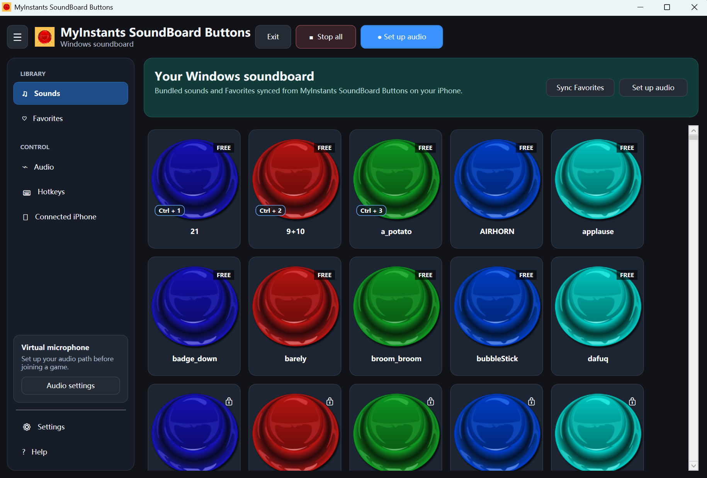
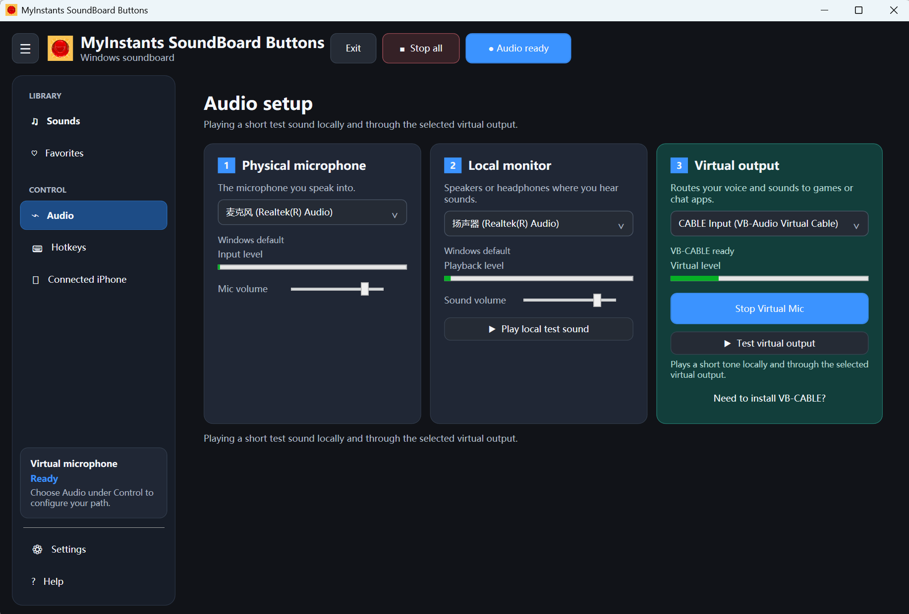
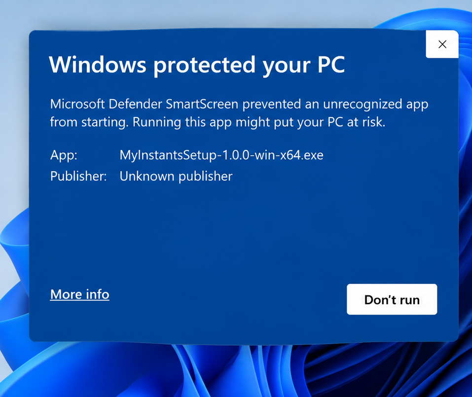
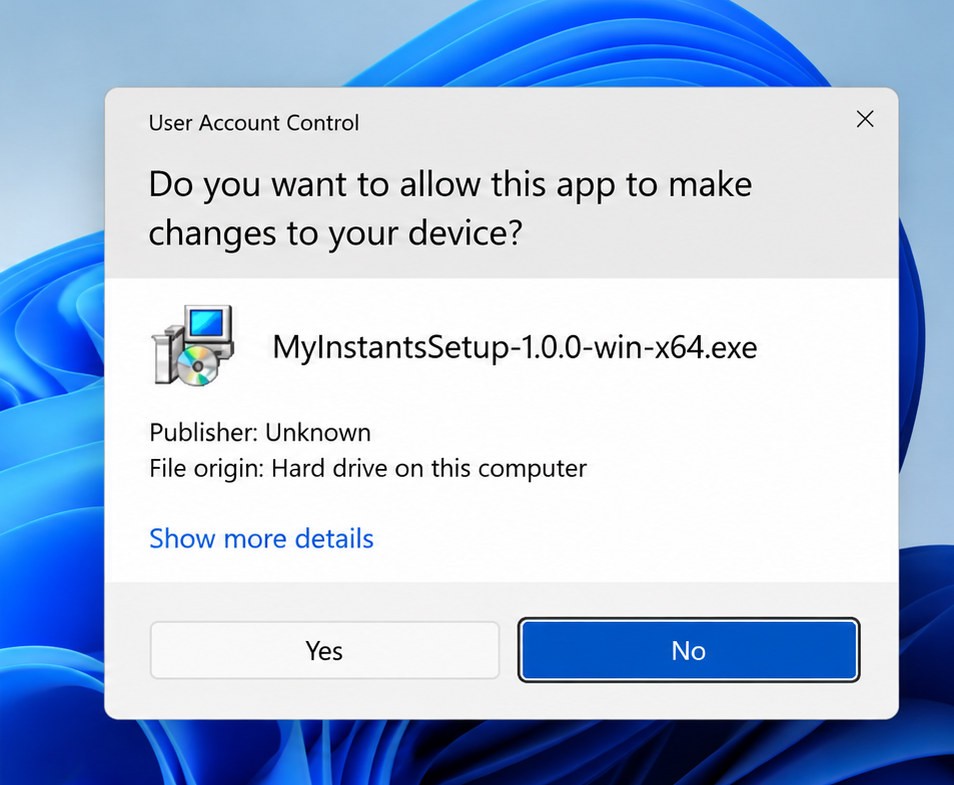

Private Beta
MyInstants SoundBoard Buttons for Windows
Play soundboard buttons locally or route your microphone and sounds to Roblox, Discord, and other voice apps.
What the Windows app looks like
The Beta includes the desktop soundboard and an Audio Setup screen for selecting a microphone, local monitor, and virtual output.


Before you install
This is an early Windows Beta. The installer downloads MyInstants and its bundled sound library. To enable the virtual microphone, it may request Windows administrator permission to install a third-party audio driver and may require a restart.
First-time Audio Setup
- Run MyInstants Setup.
- Approve administrator permission if you want the virtual microphone.
- Restart Windows if prompted.
- In MyInstants, open Audio Setup.
- Choose your physical microphone and local headphones or speakers.
- Start Virtual Mic.
- In Discord or Roblox, choose CABLE Output as the microphone when available.
Virtual microphone driver
VB-CABLE by VB-Audio
MyInstants uses the official VB-CABLE virtual audio driver to route microphone and soundboard audio to voice apps. Origin: vb-cable.com. VB-CABLE is donationware; if you find it useful, you can support VB-Audio.
Possible Windows prompts during installation

Windows may show a security notice because this early Beta is not yet code signed. Download only from this official MyInstants page. If the app name or source looks different, close it and report the problem.

Windows asks for administrator permission to install MyInstants and the official VB-CABLE virtual audio driver. VB-CABLE installation may require a Windows restart.
Updates
When a newer Beta is available, download and run the latest MyInstants Setup. Your MyInstants preferences and VB-CABLE installation are kept.